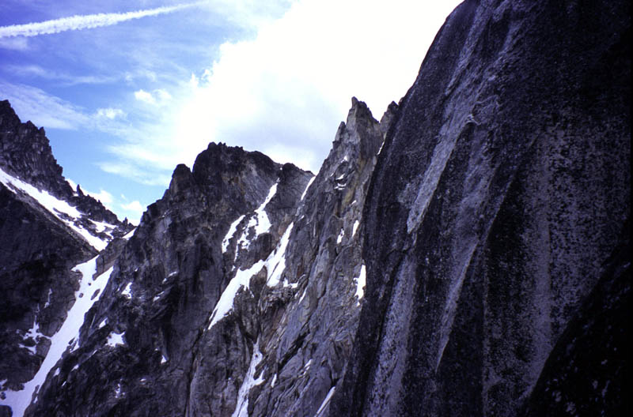
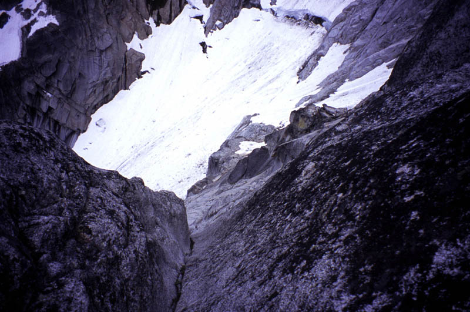
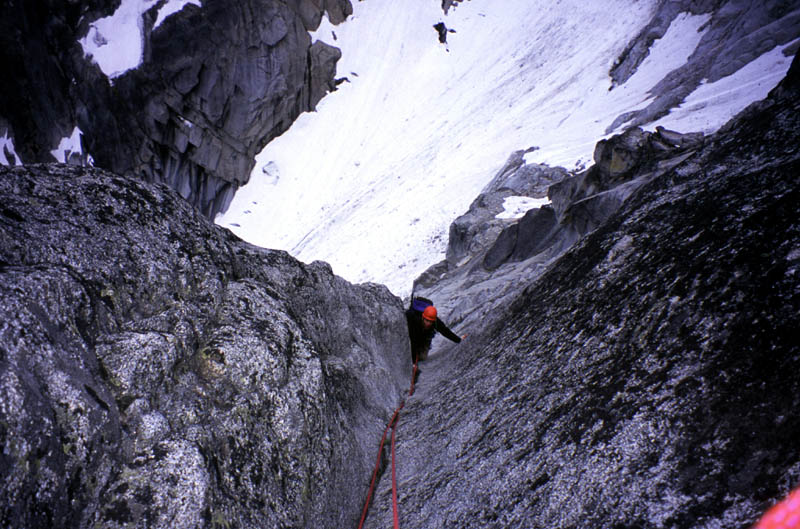
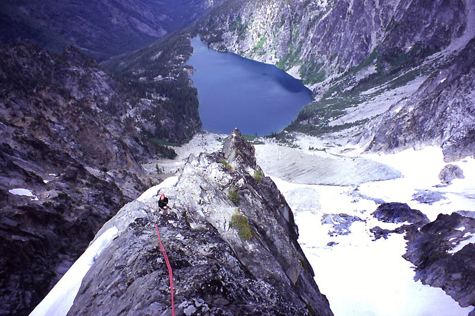
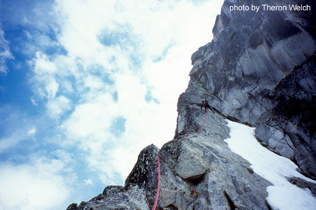
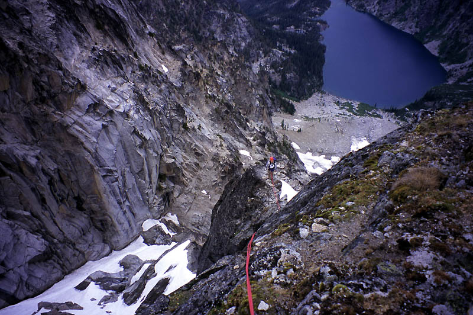
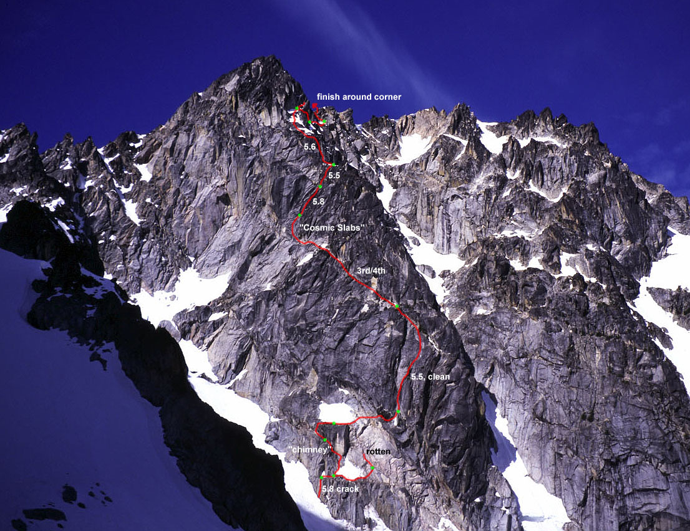

Colchuck Peak, NE Buttress
Northeast Buttress, IV, 5.8
Theron and I expected the NE Buttress of Colchuck Peak to be similar to the Serpentine Arete on Dragontail Peak just “across the street,” on the other side of the Colchuck Glacier. In fact, the route was much more…shall we say…interesting?
First off, there are two prominent descriptions of the route. The Beckey Guide has one that describes 5-6 pitches all on the left side of the buttress crest, including some 5.8 climbing to the left of “rotten pink rock.” The Kearney book describes the first 7 pitches as being mostly on the right side of the crest. To really confuse yourself, consult both descriptions liberally while on the climb! “I think that might be a shallow chimney, or is it the flake mentioned on Beckey pitch 3?” If you wonder how a flake and a chimney could be confused, that is the state of mind you might get into when nothing seems to match the guidebook! So we ended up climbing all kinds of unknown pitches.
First, we could see a nice wide 5.8 crack for the Kearney version of the route, and we thought it would be a great start. But climbing up the snow to reach the rock revealed a pretty scary moat situation. An overhanging curl of snow concealed an 80 foot deep chasm between the snow and rock. You might think about rappelling into the moat and climbing out on the rock, but the slabs were smooth and steep, making it an unattractive idea. Back left, we found a thin snowbridge that on closer inspection was a wedged snow boulder touching lightly in two places. We had to walk far left to find a place where snow touched rock.
Theron found a relatively easy access point, but I didn’t like the smooth-looking slabs we’d have to immediately climb on (in boots?). I found a spot to the left that allowed us to climb to a ledge where rock shoes could be put on. Then, clean looking cracks led up and left. I got my shoes on and brought Theron to the ledge, then set out on cracks that were, hmm, suddenly a lot steeper than they looked from the snow. I followed a hand crack leftwards and up, feeling a little tense because I knew I wasn’t on any version of the described route, and hoping I wouldn’t be stopped by a lack of holds. The pitch was fantastic in one way, because it was steep and completely blank for handholds outside of the crack. Occasionally awkward hand jams helped me get up, protecting well with cams. I reached a nice ledge with a sling anchor that seemed to be a popular spot. Theron came up, naturally eager to do something simpler for the next pitch!
With that in mind, he led around the corner where we stood on a broad sloping ledge looking up at a tree-covered set of ledges that we knew was on the route. Easy-looking pink rock led up there and Theron confidently set off. I had worried aloud that this might be the rotten pink rock that Beckey says to avoid, but Theron saw a good looking way so I put him on belay. It didn’t take long to see how truly bad this rock was! What appeared to be nice looking flakes would crumble in Theron’s grip. Eventually, he couldn’t trust anything and had to come down very carefully. It was a sore lesson, and sent us scurrying to find the “shallow chimney.” We saw a hard-looking crack/corner, and a flaky-looking chimney to the left. I led up unprotectable slabs for 40 feet to find a solid fixed piton at the base of the chimney. It didn’t feel as hard as 5.8, more like 5.7. At the top I belayed from a fixed block with a sling around it. Theron sent me off again and I traversed a frustratingly long ledge left (because I wanted to go right to reach the treed ledges). Twice I tried to go up the cliff, but wet dripping chimneys kept me from finishing. Finally at the end of the ledge I committed to a 5.9 move to get above the overhanging cliff. I built a belay on a ledge, then Theron arrived and we simul-climbed (finally) about 50 meters to reach the dihedral at the treed ledges.
Theron led off on a stellar pitch which made us enjoy ourselves for a while. First a fun steep 5.5 dihedral, then cracks leading onto an otherwise blank face provided fun solid climbing. We simul-climbed it to reach the distinctive ledge system that should eventually lead to the buttress crest. At this point, the Kearney and Beckey routes converge (for a while anyway).
We ate some lunch, looking across at the massive bulk of Dragontail Peak. We were still so low on this mountain in comparison to how quickly we climbed the Serpentine Arete on Dragontail a year ago. The weather was holding really nicely, which kind of surprised us as we expected rain and clouds in mid-afternoon.
We scrambled up the easy ledges, noticing how high and steep the wall on our right was becoming. At this point of the ridge, the crest arcs high above, protected by blank walls. So we settle for our 4th class ledge, and start keeping an eye out for twin cracks that should let us regain the crest. We must be blind moles because we never found the cracks. Then our ledge ran out, and I found myself climbing a pleasant slab just right of an imposing blank-walled dihedral. I was pretty sure the thing to do was climb this slab up to a perceived ledge higher up where we’d certainly find the crack or a crack or something…anything? I found sparse but decent protection on the gray rock, and I kept trying to see up and around a corner. Faced with a committing mantle move or a scary downclimb I hesitated. Then I made the mantle move, placing my hands on a ledge then matching my feet next to them and standing up against a steep blank wall carefully. If I could do one more of these I’d be on easier terrain. Standing on tiptoe, my hands scanned the smooth stone for a wrinkle, bump or edge. “Must be something here…” There was, for my left hand only. Moving over, I got both hands on the bump and pulled, pasting my feet up the gray slab even as I stood carefully against the next wall, super aware of being at least 20 feet above my red Quadcam buried in a shallow grove now impossibly far below. The bad thing about mantle moves is that they are really hard to downclimb from, so I was quite committed to finding some way off the Cosmic Slabs. I found that I hadn’t made it to the hoped-for easier ground, as the round-off in slope angle just receded another 15 feet away. “That way lies madness,” I thought. So I crabbed to the right on thin ledges to a more broken area, and thankfully found a crack that would hold two small nuts.
Theron stood on a ledge below, and I saw a rappel would reach him. Loath to backtrack again, and needing Theron to climb in order to retrieve the three pieces of gear far to the side, I belayed a reluctant Theron up to my airy belay perch. We could always rappel if it seemed too hard to go on. But straight above us there was a blocky crack system, and then the buttress crest seemed tantalizingly close, so I didn’t want to rappel if only we could get over this next section. It was entertaining looking at the blank walls on our left, and as Theron climbed he would say funny stuff like: “bam, right here, right here is where I woulda stopped and brought you up.” When he arrived, he was lulled just as I was by easier looking ground above. I had actually tried to surmount a bouldery step to investigated but found it was harder than it looked. Now we would find out!
With a good belay from Theron, I moved left and tried to climb onto a platform just at eye level. It was hard because there were no handholds on the sloping platform. Because a fall would be onto our two nut anchor, I wanted to be very sure I could do the move. “There’s a spot for your right foot, Michael.” “Good, I need some kind of handhold though.” On the left wall was a finger-width ledge that gave me enough support to counterbalance up, get my foot higher, lean back right, match feet and move my right foot up to the edge of the platform. A few more tense moments, and I was stuffing my hand into a crack thankfully. “Okay, that was a 5.11 move,” I heaved. On the follow, Theron downrated it to 5.10c, the sandbagger! Now for the easier ground. Up and around a corner I found a striking corner crack that would gain about 70 feet of vertical. Entering, I could feel the blank slabs below sucking at me, and our thin ribbon of gear, hope and sinew keeping us attached. I felt really good, especially as the jams became really secure, and I could place some large cams for safety. The crack would occasionally pinch down to a seam filled with moss, but it always worked out that by jamming a foot in just below I could sink a good jam over my head. I ran out of rope and because I wasn’t willing to simulclimb while Theron had to make the 5.10c move off the belay, I needed to stop. The best I could do was one orange Metolius cam in a dirty crack under a small roof. I also had a decent stance stemming in the corner where I thought I could hold his body weight reasonably well. Now I was really wishing we had brought the “serious” 60 meter 9.4 millimeter rope.
Theron got past the starting move, and was obviously happy to be leaving the blank steep walls of the Cosmic Slab! He led past me, getting a solid nut in 5 feet up, really improving my belay anchor! Climbing another 30 feet on easier ground, Theron belayed on a ledge below an easy looking dihedral to the crest. Whew, what a nice release of tension after a couple of stressful pitches! I kept climbing past Theron, picking up a cam or two, and following an enjoyable 5.5 blocky corner to the crest. I sat down and admired our new surroundings as I brought Theron up on a hip belay. The vast emptiness of the Northeast Couloir sank away behind me and towers reared ahead on the ridge. I didn’t know what time it was, but I began to think how happy I’d be if we got off the technical ground before dark! The sky had clouded up, and heavy gray breakers were cresting ridges 10 miles away.
“At least we are back on route! Wow, look at Serpentine Arete…” we thought. Man…it sure did look steep, inviting and, well…simple! I mean, you just go up, you don’t get lost like on this thing! I thought that even if the difficulty of what we just did was like 5.8 with the exception of the 5.10c move, it felt like some of the bolder climbing I’d done, just because there was real uncertainty about the terrain ahead working out. Maybe it just had a certain look: steep licheny or blank walls, and it sometimes had a tendency to look easy, but when closer it reared up as dead vertical.
Anyway it was time to keep moving. Theron felt a little shellshocked, so I led off on the crest, ultimately for an enjoyable pitch of 5.5 climbing right on the ridge crest. Above a steeper section, I continued on easier ground that got gradually more loose and sandy. The long pitch ended in a corner right below a vertical cliff. There was an intriguing steep chimney right against the cliff, and a striking overhanging hand crack going straight up to who knows where. Somebody sometime must have climbed that, but we wouldn’t today! Theron wished me luck as I scrabbled around a corner and found myself between three towers. I got some gear behind a flake that was very inviting to climb, but my curiousity for the unknown had been dulled by previous adventures! Above I saw blank licheny walls that might not end well. I tottered out on wedged blocks somehow suspended between towers to look down and around a corner. “We could downclimb here about 50 feet to reach loose easy terrain Theron,” I said. Theron thought we could do it from the belay, and overall that seemed wiser. So I came down, then downclimbed an icy chimney to a stance. Theron followed, then led out, climbing down steep snow (getting a great foot jam in an ice chimney!), then traversing rotten ledges to stand below a snowfield. “How’s it look?” I called.
“I don’t know man. It looks bad,” he said.
“Actually it looks really bad,” he repeated, looking around for other options.
We didn’t want to return the way we’d came, so I grimly followed his traverse, prepared for some mossy overhanging horrorfest to heave into view. I was somewhat heartened though, because it didn’t seem that bad. The way was blocked by a water-streaked near-vertical cliff, about 30 feet high, black with water and moss. It looked nearly blank, but I could see a ledge trending up and left (through a moss patch), and I could imagine where holds or protection might be. Finally, I never heard about this part, and after a look at the deeping fastness all around, I thought everyone must come through here. And they lived! So…
“Cheer up my friend, we’ll surmount the ob’stcl’!” I rejoined.
The first move was tricky. I finally had to make do with pressing a foot on a huge block that leaned and nearly toppled even as I pressed. We had made sure it wouldn’t hit either of us. Above this, there really were good pockets and flakes to place some gear and set eager fingers. Beyond that, we wondered why it looked so scary. Soon I belayed from a horn and Theron arrived, in better spirits. “You really scared me on that thing!” I laughed. He suffered from seeing too many harder-than-expected pitches!
Theron led off confidently over bits of snow, rock and ice. At one point he achieved the nadir of alpine climbing. One foot jammed between ice and rock in a chimney, while hands made a “Gaston” counterpressure move on a wide crack to pull up. The other foot smeared on the face. How often do you get to do that?
On a long simul-climbing lead over gradually easier terrain, Theron led us to an exit 20 feet below the summit of the Northeast Peak. “Whoooooo!” we said.
It was 5:45 pm, and clouds were rolling in, obscuring our neighbor Argonaut Peak. We put on boots and hiked to the true summit and enjoyed watching peaks and valleys appear and disappear in the gathering mist. The breakers had stormed the next-nearest ridge and would soon spill into the Mountaineer’s Creek valley. We had enjoyed a real adventurous climb!
|
 The steepness of walls above the Cosmic Slab was intimidating |
|
 The corner crack above the Cosmic Slabs |
|
 Theron in the corner crack |
|
 Climbing on the buttress crest |
|
 Michael on the crest |
|
 Theron belays below the short steep wall |
|
 A topo with most of the route as we did it |
{kind=link}
{kind=link}
{kind=link}
{kind=link}
{kind=link}
{kind=link}
{kind=link}